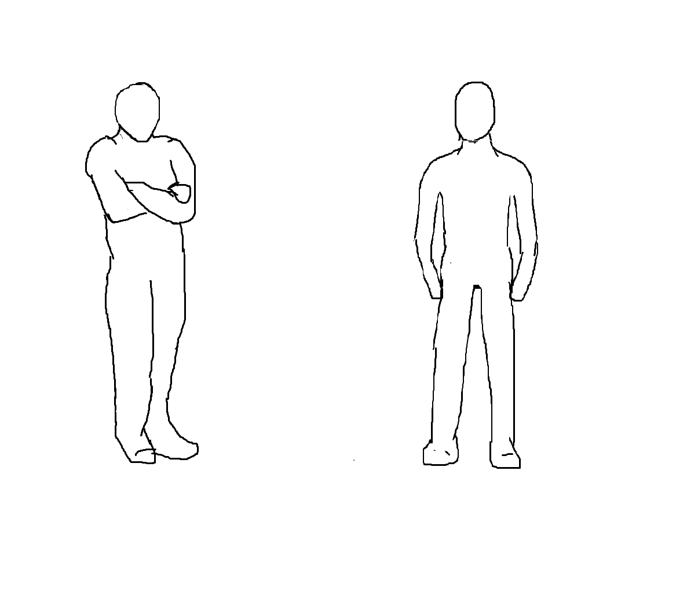
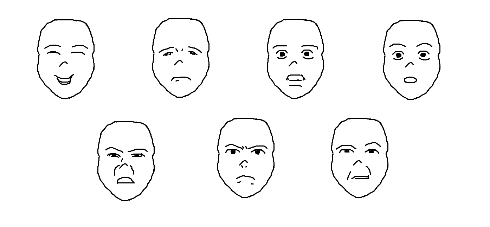

Como já comentei no post sobre anatomia, desenhar pessoas é de praxe pela própria motivação de desenhar. Mas para que o desenho passe sentimentos humanos é necessario saber como são expressos.
A seleção natural deixou aspectos marcantes em como o ser humano passa significado através de sua postura. Quando queremos nos proteger de algo damos prioridade as partes em que golpes seriam mais fatais. Por exemplo, ao cruzar os braços, encolher os ombros e juntar as pernas, temos a figura de alguém em pleno desconforto, que gostaria de não estar passando o que está passando (ou simplesmente está com frio). Chamamos isso de postura fechada.
Por outro lado, ao deixar os ombros mais para trás, os braços pendentes, mãos visíveis, a respiração fácil, coluna ereta e pernas mais separadas, caracterizamos conforto e confiança. E chamamos isso de postura aberta, em que se ocupa mais espaço.Uma postura aberta de mais pode significar dominância, como ao se abrir muito as pernas.
As noção de postura aberta ou fechada ajuda descrevendo rapidamente se alguém se sente bem ou não em uma situação. E saber que a exposição de partes menos seguras representa que se está bem aparece de formas bem interessantes. Por exemplo, humanos, cachorros e alguns outros mamíferos demonstram sentir carísma uns pelos outros curvando o pescoço, o que deixa fácil de atacar veias e artérias importantes, como a carótida e a jugular. Além disso, um sinal comum nos humanos de desejo romântico é mostrar a parte de baixo do pulso, que se fosse cortada levaria à hemorragia.
É possível mostrar o nível de proximidade emocional de duas pessoas em um desejo pela distância física enquanto conversam. Isso porque o ser humano delimita o quão perto dadas pessoas podem ficar de si. Quando alguém se aproxima mais do que o esperado, a reação majoritária é o desconforto. Pesquisando a respeito me apareceu recorrentemente as seguintes divisões do espaço: íntimo, pessoal, social, público.
| espaço | em que é possível | distância estimada | destinado a |
|---|---|---|---|
| íntimo | sentir o calor humano, se comunicar pelo tato, fazer carinho, lutar | não delimitado, é juntinho mesmo | pessoas do grupo familiar, namorados |
| pessoal | ver nitidamente o rosto, notar detalhes fisionômicos, segurar a outra pessoa | a extenção do braço | amigos |
| social | conversar sem expressar amizade, deixar não muito visíveis os detalhes pessoais | de 1,20 m até 3,60 m | conhecidos |
| público | se dirigir a um grupo de pessoas, apresentar palestras | mais de 3,60 m | desconhecidos |
Charles Darwin em suas pesquisas para explicar a origem das espécies encontrou a seguinte dúvida: os seres humanos pertencem todos à mesma espécie? Na época não existiam os precisos testes de DNA, até porque o DNA não era conhecido, mas ele encontrou o interessante argumento de que sim, pois todos conseguimos reconhecer algumas expressões faciais comuns uns nos outros.
Muito tempo depois, o psicólogo Paul Ekman decidiu pôr a prova essa assertiva. Ele acreditava que diferentes culturas tinham diferentes expressões faciais para representar emoções. Depois testar pessoas de várias partes do globo, inclusive japoneses que se expressavam bem pouco mas somente quando sabiam que estavam sendo observados, zarpou para a Papua Nova Guiné a fim de se encontrar com uma tribo isolada o bastante para nunca ter visto filmes, fotos ou estrangeiros se expressando. Como poderiam não ter palavras com as mesmas correspondências emocionais, os testes consistiam em contar histórias curtas como "você chega em casa e se depara com um feroz javali" ou "você perde um familiar querido" e pedir para que escolhecem entre fotos a expressão facial correspondente. Em troca os indígenas ganhavam coisas como sabão e cigarros.
Ficou constatado que existem sete emoções básicas para toda a humanidade: alegria, tristeza, medo, surpresa, nojo, raiva e dezpreso. Não que você vá desenhar pessoas com nojo com muita frequência, mas considero importante conseguir desenhar essas expressões faciais
Paul Ekman também criou um sistema de codificação de expressões faciais, o FACS, que eu ainda não estudei em detalhes mas me parece ser muito eficaz, permite cerca de 10000 combinações diferentes e é usado nas animações da Disney.
Existem inúmeros sinais expressos pela linguagem corporal, que possibilitam criar muitos sentimentos à partir de de desenhos. Por exemplo: